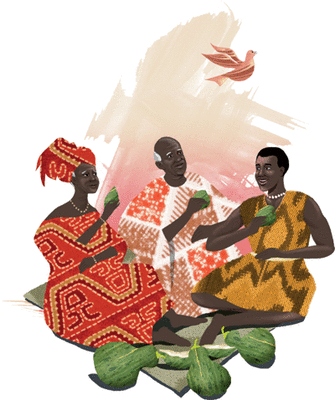

Quand Ségué eut cassé l'œuf, il aperçut à l'intérieur un petit anneau blanc. Il se fit alors une légère incision à la main et mouilla l'anneau avec le sang qui en coulait. L'anneau devint aussitôt jaune comme de l'or. Passe cette bague à ton doigt, lui recommanda alors la tourterelle. Chaque fois que tu auras besoin de quelque chose, frappe le sol avec la paume de la main où se trouve le doigt qui porte l'anneau. Prononce en même temps le nom de ce que tu désires. Tu l'obtiendras à l'instant même !

Alors, frappant la terre de nouveau, il appela : « Mon père ! Ma mère ! Venez manger de la bouillie ! » Aussitôt, il vit ses parents à ses côtés. Tous deux s'assirent et mangèrent, eux aussi, de grand appétit. « Petite tourterelle, dit alors Ségué, que ton anneau soit efficace ou non, tu m'as déjà donné plus de nourriture que ta chair ne m'en eût valu ! Aussi vais-je te laisser aller. Mais sache bien que si ta bague cessait de m'être utile, il me serait encore possible de remettre la main sur toi ! »